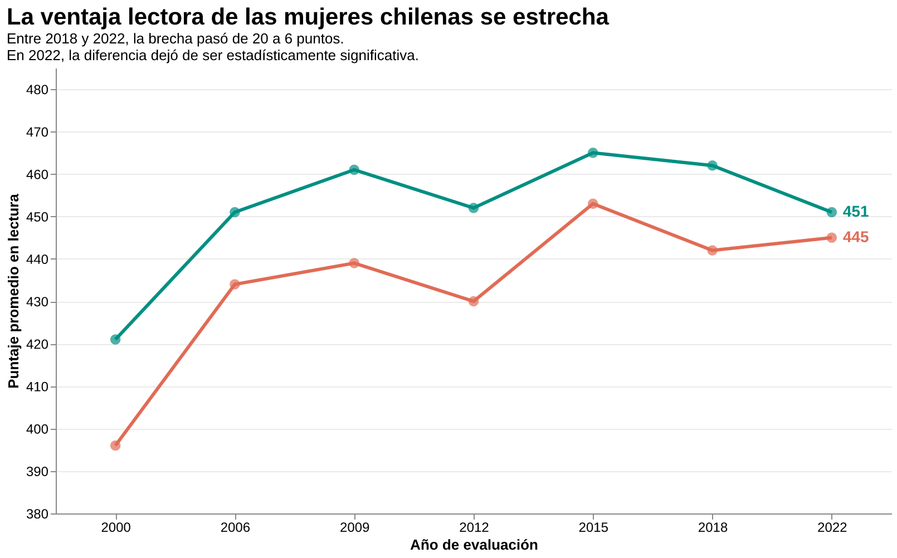

En 2022, los resultados de la prueba PISA parecían mostrar un avance en la igualdad educativa entre hombres y mujeres. La diferencia en comprensión lectora se había reducido a solo seis puntos, la menor distancia registrada en la serie histórica de Chile. Por primera vez, la ventaja femenina ya no era estadísticamente significativa.
Pero había un detalle importante detrás de esa cifra: las mujeres no habían mantenido sus resultados mientras los hombres mejoraban. En realidad, gran parte del acercamiento se explicaba porque ellas habían retrocedido.
Tres años después, PISA 2025 volvió a cambiar el panorama. La distancia entre ambos grupos aumentó nuevamente, aunque esta vez en un contexto de caída del promedio nacional. Los resultados muestran que las brechas educativas pueden reducirse o ampliarse sin que eso signifique necesariamente una mejora en los aprendizajes.
Una ventaja que se mantuvo durante dos décadas
En el año 2000, las estudiantes chilenas obtuvieron 421 puntos en comprensión lectora, frente a los 396 alcanzados por los hombres. La diferencia era de 25 puntos.
Durante las siguientes mediciones de PISA, las mujeres continuaron obteniendo puntajes superiores. La distancia entre ambos grupos fue cambiando, pero la ventaja femenina se mantuvo.
En 2009, por ejemplo, las mujeres alcanzaron 461 puntos y los hombres 439. En 2015, la diferencia se redujo a 12 puntos y, en 2018, volvió a aumentar hasta los 20.
Esta trayectoria muestra que la brecha nunca siguió una tendencia completamente estable. Sin embargo, hasta 2022, las mujeres siempre habían registrado un promedio más alto.
El cambio que reveló PISA 2022
Entre 2018 y 2022 ocurrió uno de los cambios más importantes de la serie.
En 2018, las mujeres obtuvieron 462 puntos y los hombres 442. Cuatro años después, ellas registraron 451 puntos y ellos 445.
La diferencia se redujo de 20 a seis puntos. Pero mientras las mujeres bajaron 11 puntos, los hombres aumentaron solamente tres.
Según el informe PISA 2022 de la Agencia de Calidad de la Educación, el resultado masculino no presentó una variación estadísticamente significativa. En cambio, el puntaje femenino sí registró una disminución.
Por lo tanto, la reducción de la brecha no se explicó principalmente por una mejora de quienes obtenían los resultados más bajos, sino por el retroceso de quienes históricamente habían tenido una ventaja.

Ver los datos y la visualización original
La diferencia de seis puntos registrada en 2022 tampoco fue estadísticamente significativa. Esto no significa que hombres y mujeres hayan alcanzado exactamente el mismo nivel de comprensión lectora, sino que los resultados disponibles no permitían afirmar con suficiente certeza que existiera una diferencia entre sus promedios.
En 2025, la distancia volvió a ampliarse
Los resultados más recientes de PISA muestran un nuevo cambio.
De acuerdo con el análisis publicado por DATAeduca sobre PISA 2025, las mujeres chilenas obtuvieron alrededor de 446 puntos en comprensión lectora, mientras que los hombres alcanzaron 425. La diferencia fue de aproximadamente 21 puntos a favor de las mujeres y volvió a ser estadísticamente significativa.
Esto contrasta con lo ocurrido en 2022, cuando la distancia había llegado a su nivel más bajo.
Sin embargo, el aumento de la brecha no puede interpretarse automáticamente como una recuperación de los aprendizajes de las mujeres. Para llegar a esa conclusión sería necesario analizar si los cambios de puntaje entre ambas mediciones fueron estadísticamente significativos.
Además, los resultados nacionales muestran una situación preocupante.
Según la OCDE, Chile obtuvo un promedio de 436 puntos en comprensión lectora en PISA 2025, lo que representa una disminución de 12 puntos respecto de 2022.
Es decir, mientras la diferencia entre hombres y mujeres volvió a ampliarse, el desempeño promedio del país empeoró.
Más allá de la diferencia entre hombres y mujeres
Los resultados de 2025 también permiten observar el problema desde otra perspectiva. De acuerdo con la OCDE, el 62 % de los estudiantes chilenos alcanzó al menos el nivel 2 de competencia lectora, considerado un umbral básico de desempeño en PISA.
Esto significa que una proporción importante de los estudiantes no alcanza ese nivel, independientemente de las diferencias que existan entre hombres y mujeres.
Por eso, aunque las brechas de género son relevantes para comprender las desigualdades educativas, no permiten explicar por sí solas la situación de la lectura en Chile.
La comparación de los resultados tampoco permite determinar qué factores provocaron los cambios. Los hábitos lectores, las experiencias escolares y las condiciones educativas podrían aportar antecedentes, pero los puntajes agregados no bastan para establecer esas relaciones.
Una brecha más pequeña no siempre significa mejores resultados
La evolución de PISA entre 2000 y 2025 deja dos momentos que parecen contradictorios.
En 2022, la distancia entre hombres y mujeres se redujo, pero esa disminución estuvo asociada principalmente a una caída del puntaje femenino. En 2025, la ventaja de las mujeres volvió a ampliarse, mientras el promedio nacional de lectura retrocedió.
Ambos resultados muestran que observar solamente la distancia entre dos grupos puede llevar a interpretaciones incompletas.
La pregunta no es únicamente si hombres y mujeres están obteniendo resultados más parecidos, sino también si están mejorando sus aprendizajes.
Porque una brecha puede achicarse sin que nadie avance y puede volver a crecer sin que el sistema educativo esté mejorando.